Example 13.16.1
Suppose you sample a function at the discrete points
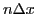,
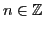. In Figure 13.11 we sample the function
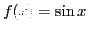 on the interval 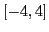 with
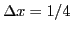 and
plot the data points.
Figure 13.11:
Sine function sampling.
|
|
We wish to approximate the derivative of the function on the grid points
using only the value of the function on those discrete points. From
the definition of the derivative, one is lead to the formula
 |
(13.21) |
Taylor's theorem states that
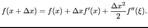
Substituting this expression into our formula for approximating the derivative
we obtain
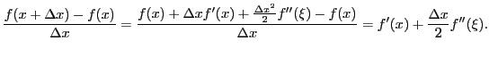
Thus we see that the error in our approximation of the first derivative is
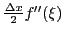. Since the error has a linear factor of
 , we call this a first order accurate method. Equation
13.21 is called the
forward difference scheme for calculating the
first derivative. Figure 13.12 shows
a plot of the value of this scheme for the function
and
. The first derivative of the function
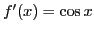
is shown for comparison.
, we call this a first order accurate method. Equation
13.21 is called the
forward difference scheme for calculating the
first derivative. Figure 13.12 shows
a plot of the value of this scheme for the function
and
. The first derivative of the function
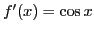
is shown for comparison.
Figure 13.12:
Forward Difference Scheme Approximation of the Derivative.
|
|
Another scheme for approximating the first derivative is the
centered difference scheme,
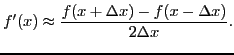
Expanding the numerator using Taylor's theorem,
The error in the approximation is quadratic in . Therefore
this is a second order accurate scheme.
Below is a plot of the derivative of the function and the
value of this scheme for the function
and
.
Figure 13.13:
Centered Difference Scheme Approximation of the Derivative.
|
|
Notice how the centered difference scheme gives a better approximation of the
derivative than the forward difference scheme.